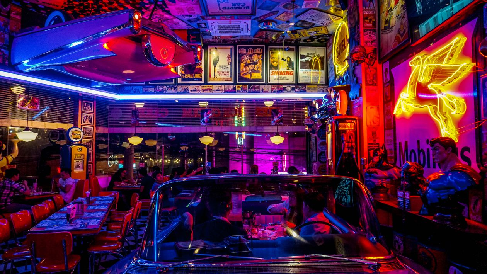
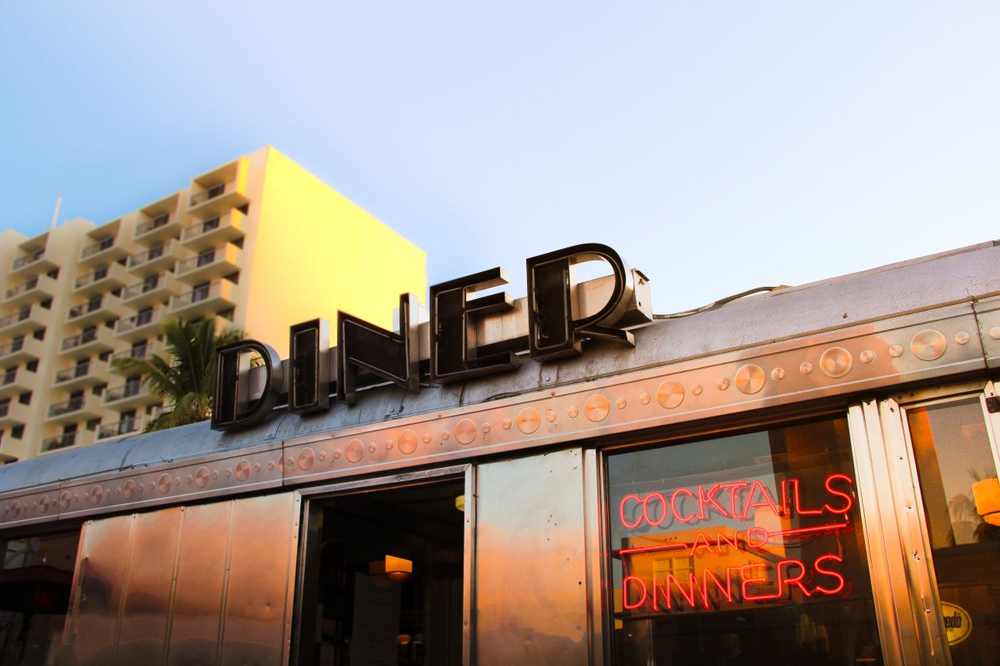
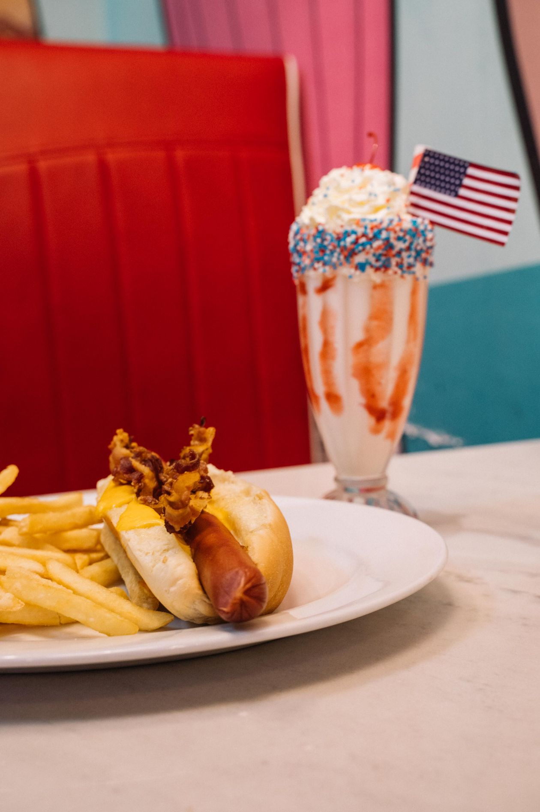
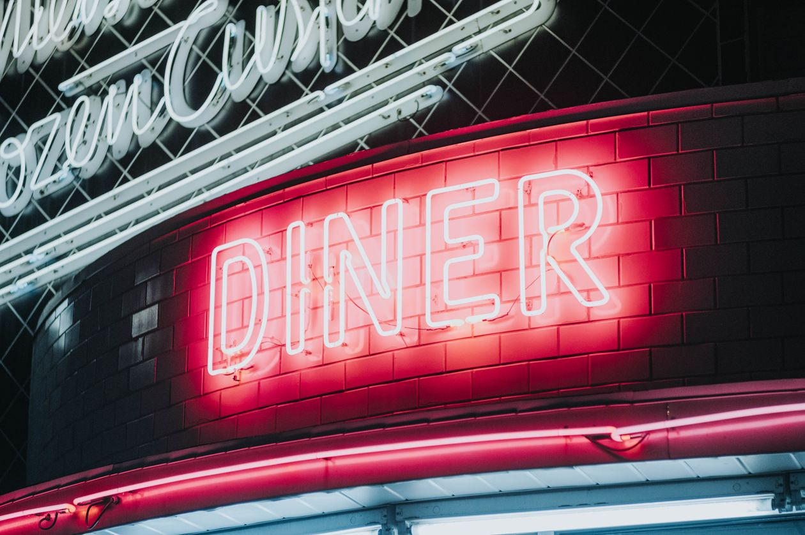

A 1930s classic, still cooking.
J R Diner keeps the vintage diner spirit alive: chrome, neon, and a griddle that never seems to cool. Featured in Syracuse.com's 2026 tour of Central New York diners.
Bring the kids and bring an appetite. Inexpensive plates, generous servings, and a dining room with real vintage character.



